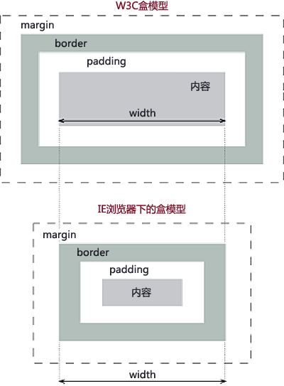

引入方式
外部样式表
1
<head><link rel="stylesheet" type="text/css" src="style.css"></head>
内部样式表
1
<head><style type="text/css"></style></head>
内联样式
1
<p style="color:red;font-size:16px;"></p>
导入样式
1
<head>d<style type="text/css">@import url("style.css")</style></head>
link和@import的区别：
- @import只能加载CSS，link还可以定义ref等其它的属性
- link引用的CSS同时被加载，@import引入的CSS等到页面全部加载完成后再加载
- @import只有IE5以上才可以使用，link都可以
- js控制DOM修改样式只能使用link的方式
- @import可以在CSS样式中再引入其它的样式
可继承属性
- 所有元素可以继承的：
visibility、cursor - 内联元素可以继承的：
letter-spacing、word-spacing、white-space、line-height、color、font、font-family、font-size、font-style、font-variant、font-weight、text-descoration、text-transform、descoration - 块级元素可以继承的：
text-indent、text-align - 列表元素可以集成的：
ist-style、ist-style-type、list-style-image、list-style-position - 表格元素可以继承的：
border-collapse
定位机制
CSS有三种基本的定位机制：普通流、浮动、绝对定位
- 普通流：除非专门指定，否则所有的框都在普通流中定位。普通流中元素框的位置由元素在HTML中的位置决定。块级元素从上到下依次排列，框之间的垂直距离由框的margin计算得到。行内元素在一行中水平布置。
- 浮动：浮动的框可以左右移动，直到它的外边缘框碰到包含框或另一个浮动框的边缘。浮动的框脱离普通流。
- 相对定位：被看做普通流定位模型的一部分，定位元素的位置相对于它在普通流模型中的位置进行移动。使用相对定位的元素，不管它是否移动，元素仍要占据原来的位置。移动元素会导致它覆盖其它的框。
- 绝对定位：相对于已经定位的最近的祖先元素，如果没有已经定位的祖先元素，那么它的位置就相对于最初的包含块。绝对定位的框脱离普通流，所以它可以覆盖页面的其它元素，可以设置Z-index属性来控制这些框的堆放顺序。
盒模型
文档中的每个元素都被描述成矩形盒子，渲染引擎的目的就是判断这些盒子的大小、属性、位置等。每一个盒子有四条边，外边距边界margin、边框边界border、内边距边界padding、内容边界content。
在w3c模型中：总宽度 = margin-left + border-left + padding-left + width + padding-right + border-right + margin-right
在IE模型中: 总宽度 = margin-left + width + margin-right

行内元素、块级元素、空元素
- 行内元素：a, b, span, img, input, strong, select, label, em, button, textarea
- 块级元素：div, ul, li, dl ,dt, dd, p, h1-h6, blockquote
- 空元素：没有内容的HTML元素，meta, hr, link, inpuy, img
src和href的区别
- href是指向网络资源的位置，建立和当前元素或者当前文档之间的链接，用于超链接
- src是指向外部资源的位置，指向需要连接的地方，是与该页面有关联的。
- src是引入，href是引用
CSS Hack
针对不同的浏览器写不同的CSS就是CSS hack。
- 条件hack
- 属性hack
- 选择符hack
px和em,rem的区别
px和em都是长度单位，区别是：px的值是固定的，指定是多少就是多少。em的值是不固定的，并且em会继承父级元素的字体的大小。浏览器默认的字体都是16px，所以未经过调整的浏览器都会符合 1em=16px。
rem是相对于浏览器进行缩放的，1rem默认等于16px，在x响应式布局中，一个一个来回换算太麻烦，所以会经常重置rem：body{font-size=62.5%;}此时的1rem等于10px。
五大浏览器内核
- IE：trident内核
- Firefox：gecko内核
- Safari：webkit内核
- Opera：以前是presto，2013年以后改用Google Chrome的Bink内核
- Chrome：Bink内核，基于webkit
CSS实现垂直水平居中
1 | <div class="wrapper"> |
1 | .wrapper{ |
伪类和伪元素的区别
伪类和伪元素的根本区别在于它们是否产生了新的元素。如果需要添加新的元素加以标识的就是伪元素，如果在现有元素上添加类别的就是伪类。
常见的伪类有：
:hover 、 :active 、 :first-child 、:visited 等
常见的伪元素有：
::first-line 、 ::first-letter 、 ::after 、 ::before 等
IE8上兼容placeholder
原理：
- 判断浏览器是否支持placeholder属性，如果不支持的话就遍历所有的input框，获取placeholder属性的值填充到输入框中作为提示文字，并将字体设置为灰色
- 当输入框获取焦点（focus）同时输入框内的文字等于设置的提示信息的时候，就将输入框清空
- 当输入框失去焦点（blur）同时输入框文字为空的时候，再把placeholder属性的值填充到输入框中，同时字体设置为灰色
- 当输入框内有输入（keydown）时，此时输入框的信息已经由focus清除，此时把字体恢复成黑色即可
- ps：不适用于加载完DOM就获取焦点的输入框
代码样例：1
<input type="text" id="uname" name="uname" placeholder="请输入用户名"/>
1 | .phcolor{ color:#999;} |
1 | $(function(){ |
图片和文字在同一行显示
- 在css中给div加上
vertical-align:middle属性 - 分别把图片和文字放到不同的div中，使用margin进行相对定位
- 把图片设置成背景图